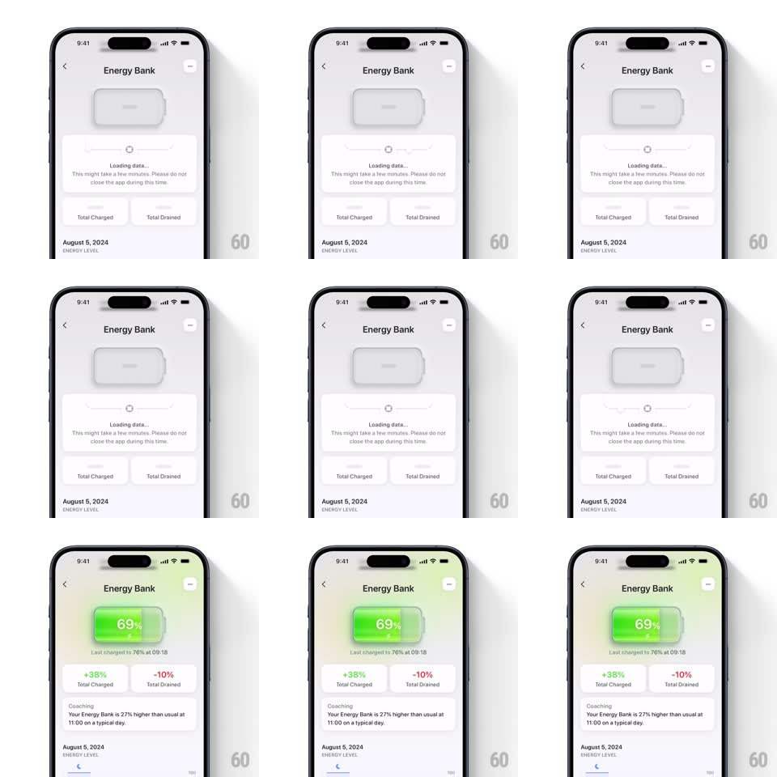

Media
Frame-by-frame

Rebuild this animation 1:1: Bevel's Energy Bank - a skeleton loading state that resolves into a glowing green battery readout with staggered stat cards.

Rebuild this animation 1:1: Bevel's Energy Bank - a skeleton loading state that resolves into a glowing green battery readout with staggered stat cards. ## Integration Integration: stack-agnostic spec - springs given as stiffness/damping, timed motions as duration + curve; map every value to your framework and animation library of choice. ## Scene The "Energy Bank" detail screen: a large battery-shaped indicator, a status card, "Total Charged" and "Total Drained" stat cards, a Coaching insight card, and a dated energy-level footer. It opens as gray skeletons with a spinner and "Loading data... This might take a few minutes. Please do not close the app during this time." ## Motion spec Pattern: skeleton-to-content reveal. - Loading phase: all regions render as gray shimmer blocks (a 1.2s left-to-right highlight sweep loops) with a centered spinner in the status card. - Resolve: skeletons fade out top-to-bottom (120ms stagger per region). The battery indicator arrives last: its green gradient fill sweeps left to right (600ms, ease-out) while the percentage counts up to 69% (same 600ms), ending with a soft glow pulse (shadow opacity 0 to 0.4 to 0.25, 300ms). - Stat cards pop in below: "+38% Total Charged" (green) then "-10% Total Drained" (red), scale 0.92 to 1 with spring ~380/24, 100ms apart. - The Coaching card slides up last (translateY 16px to 0, 300ms) with its body text fading in 100ms later. - "Last charged to 76% at 09:18" fades in under the battery after the count finishes. ## Calibration - Total resolve ~1.5s after data ready; the battery fill is the hero - everything else defers to it. - The green fill uses a vertical gradient (light top to saturated bottom) with rounded ends inside the battery shell. ## Reduced motion Skeletons crossfade to final content; the count sets instantly. ## Don't miss - The battery shell outline stays visible during loading - only its fill animates in. - Charged is green, Drained is red; the signs (+/-) are part of the value text.